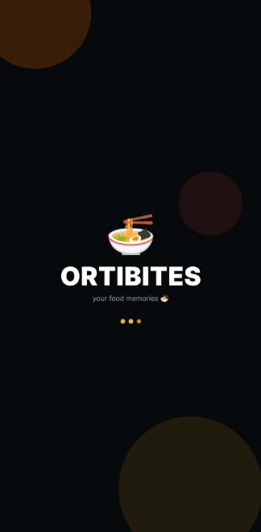
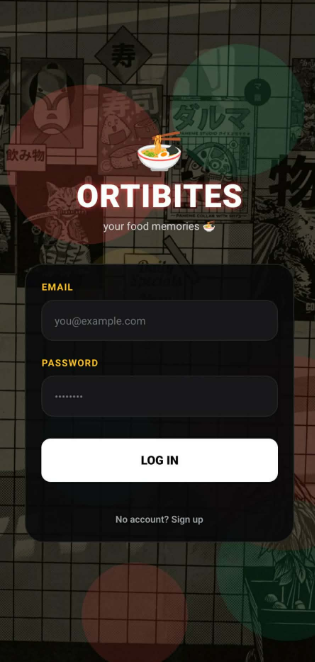
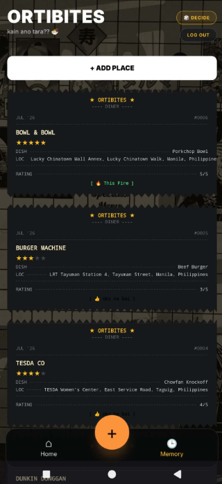

A retro-inspired food memory app for Ortigas workers discovering, rating, and revisiting their favorite food spots.



2026 - Current
Mobile App Design
User Interface Design
Full Stack Mobile Development
Expo
Supabase
React Native
Expo Router
TypeScript
NativeWind v4
Supabase (Postgres + Auth + RLS)
OrtiBites is a cinematic food journaling app designed for Ortigas workers who are constantly exploring restaurants, hidden gems, comfort food spots, and memorable dining experiences around the city.
Rather than functioning as another generic restaurant directory, the app focuses on preserving personal food memories — combining restaurant tracking, favorite dishes, dining pros and cons, and ratings into a cozy, visually expressive mobile experience.
Built with a retro diner inspired aesthetic on React Native and Expo, with Supabase handling auth, storage, and row-level security on the backend, OrtiBites is designed to feel personal, nostalgic, and cinematic rather than corporate.
Create, edit, and delete restaurant entries to build a personal log of dining experiences instead of a generic directory.
Store dining pros and cons for every spot so future-you remembers what worked and what didn't.
Save standout dishes and rate every dining experience with a built-in restaurant ratings system.
Dark cinematic interface with an orange/amber accent system, smooth fade transitions, and a mobile-first responsive layout.
Can't decide what to eat? Spin the roulette to randomly land on one of your saved spots and settle the debate.
A Spotify Wrapped inspired yearly recap surfacing your most liked, most favorited, and most visited food spots.